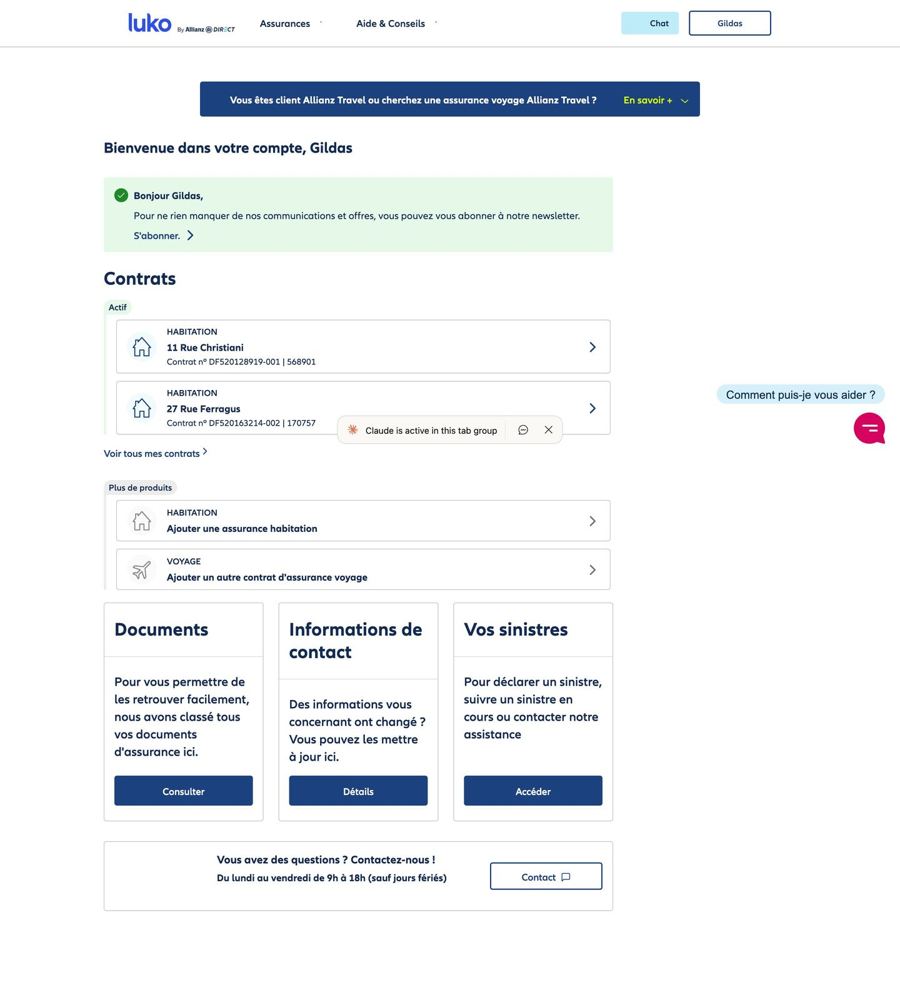
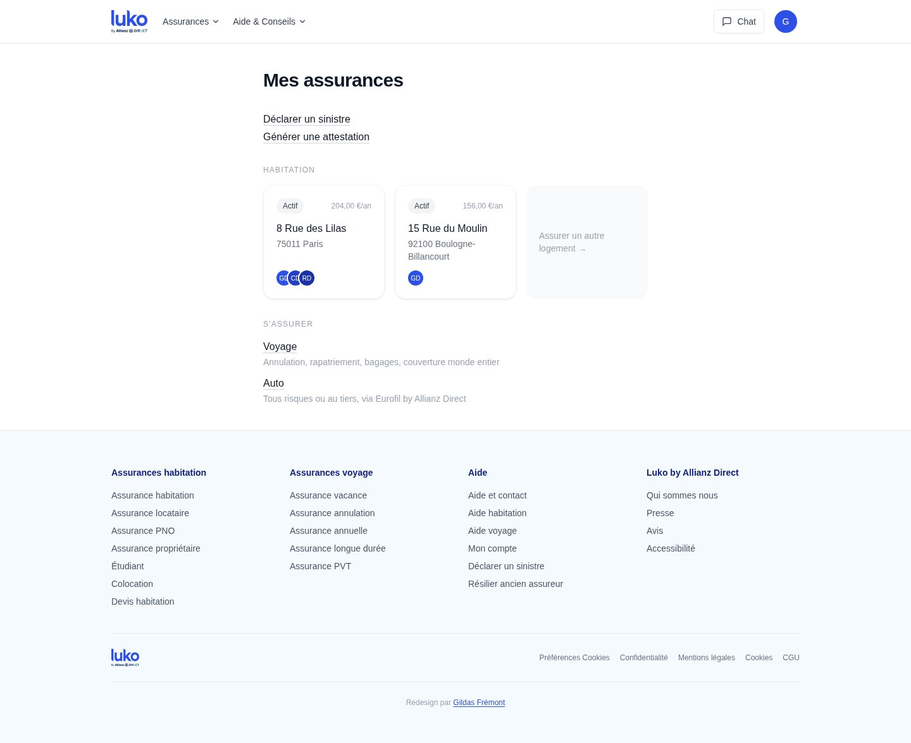
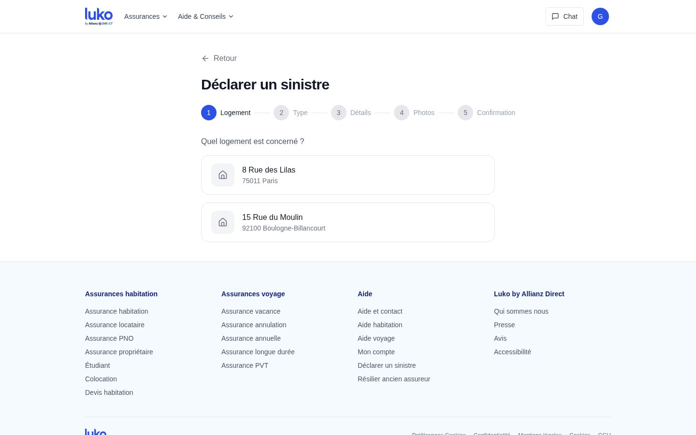
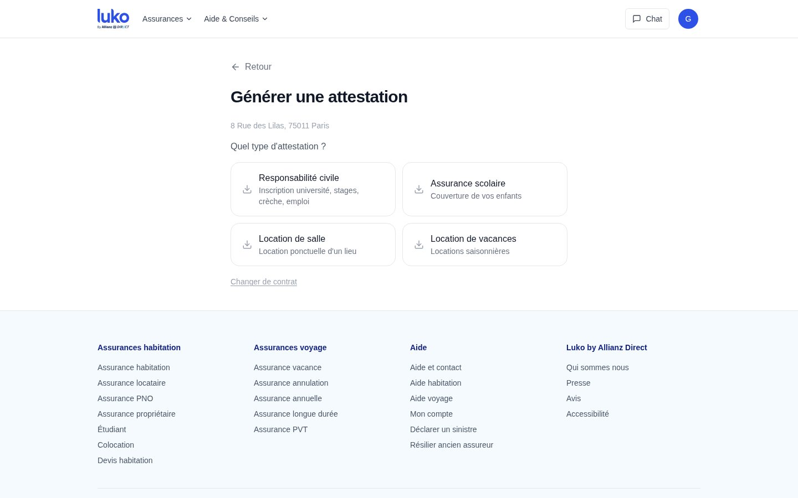
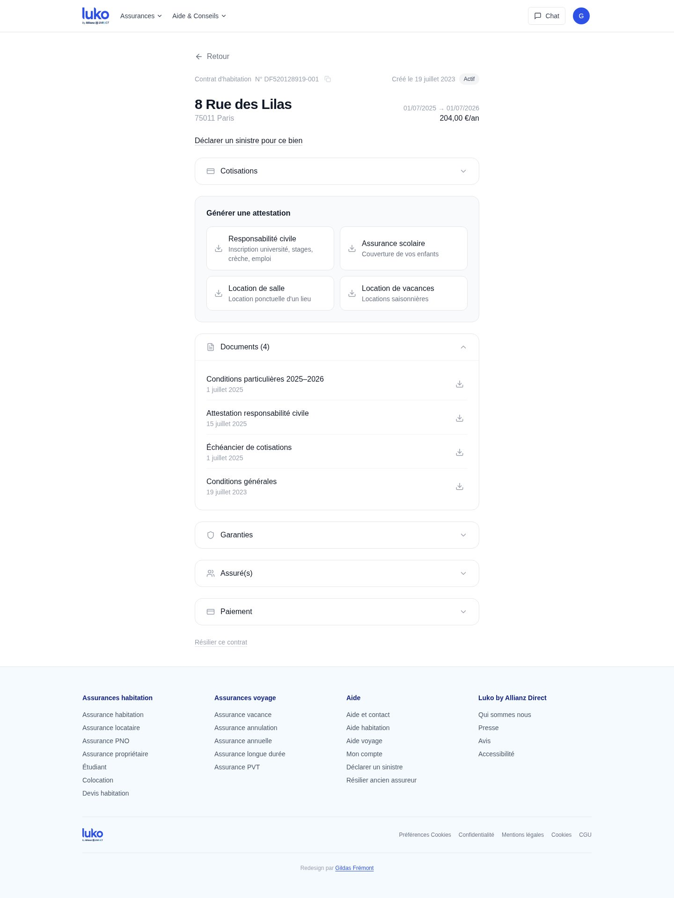

Ornikar
De zéro à un
Faire passer 15 000 personnes par 96 préfectures
Premier product manager, salarié nº 8 · 2014–2016 · Marketplace B2C sur un marché réglementé
Lucca : revue de salaires
Fonctionnalité
Vingt vues candidates, trois qui restent
Directeur produit à temps partagé · depuis 2023 · Nouveau produit sur une suite de 13 modules et 7 800 clients
Lucca : impersonation
Pattern
Un mécanisme qui contraint le nommage, la navigation et les permissions
Directeur produit à temps partagé · depuis 2023 · Design system et patterns transverses
Lucca : rôles admin
Conseil
Un modèle de permissions qui débordait sur l'expérience admin
Design produit, cadrage, modélisation fonctionnelle · 2025, usage cible 2026 · Avec le Produit, le Customer Success et la task force rôles
UBAQ
Conseil
Un audit qui a trouvé l'organisation derrière l'interface
Audit produit, puis accompagnement · Plateforme NTU, conformité santé
Guinet-Derriaz 1912
Logiciel
Un système d'information pour un groupe qui n'en avait pas
Système d'information à partir de zéro · un an à deux jours par semaine · 100 k€ de budget
Synaxe
Conseil
Un produit capteurs qui était un produit conformité
CPO à temps partagé · six mois · Plateforme DUNE, opérations sur matières dangereuses
monbanquet.fr
Logiciel
Un devis sur mesure en trente minutes
Directeur produit · 2017–2019 · Traiteur en ligne appuyé sur des artisans indépendants
Luko by Allianz Direct
PrototypeUn redesign non sollicité, avec les écrans
Projet perso · mars 2026 · Espace client d'assurance · Construit avec Claude en quelques heures
Le parcours
Designer d'abord, puis produit, puis code, puis direction produit, puis vingt-sept missions
Salarié nº 10, premier designer UX, 2011–2014Créer la fonction design d'un éditeur de logiciels RH et retravailler les premiers modules pour qu'ils tiennent ensemble comme une suite. Faire passer l'onboarding d'un nouveau client de trois jours d'implémentation à quarante-cinq minutes. Lancer plusieurs des produits devenus la suite Lucca.
Salarié nº 8, premier product manager, 2014–2016Passer du design au produit, sur un marché sans plateforme ni cadre légal. Le cas est plus haut.
 Bootcamp développeur full stack, batch 30
Bootcamp développeur full stack, batch 30Apprendre à construire ce que je spécifiais.
Directeur produit, 2017–2019Diriger le produit pour la première fois, dans une entreprise dont la survie dépendait d'un seul outil. Le cas est plus haut.
 Directeur produit, 2019–2020
Directeur produit, 2019–2020Refondre les tunnels d'acquisition et le CMS d'un comparateur d'offres internet à 1,2 million de visiteurs par mois sur un monolithe, et accompagner le passage à une organisation produit. L'architecture de l'information est toujours celle en service.
Direction produit à la demande pour des éditeurs et des startups : audits, design systems, création de produit, simplification de parcours complexes, systèmes d'information, product-led growth. Lucca, UBAQ, Guinet-Derriaz et Synaxe sont les cas plus haut.
Formation
- Le Wagon, bootcamp développeur full stack, batch 30
- Strate, Paris, design industriel et interaction
- Grenoble École de Management, management de l'innovation
- Saint-Jean de Douai, CPGE
Écrits
- Le parti pris du logiciel, mars 2026
- Unsolicited redesign de Luko by Allianz Direct, mars 2026
- Autopsie d'un audit produit, juin 2025
- L'impersonation : anatomie d'un pattern, mars 2025
- La conformité n'est pas une fonctionnalité, novembre 2024
- Tous les articles →
Ornikar
De zéro à un
Faire passer 15 000 personnes par 96 préfectures
Premier product manager, salarié nº 8 · 2014–2016 · Marketplace B2C sur un marché réglementé
Ornikar vendait le permis sans auto-école, à une époque où la loi ne le permettait pas encore. Les élèves passaient l'examen en candidats libres, ce qui voulait dire une inscription dans l'une des quatre-vingt-seize préfectures, chacune avec ses formulaires et ses habitudes. Vu de l'extérieur, la croissance ressemblait à un problème d'acquisition. J'ai décidé que c'était un problème d'inscription, et j'ai mis l'effort produit là, contre l'avis dominant. Nous avons d'abord fait les inscriptions à la main pour apprendre les règles, puis nous les avons automatisées une fois stables, puis j'ai allégé le parcours côté élève. Zéro à 15 000 utilisateurs payants en dix-huit mois.
Le contexte
En 2014, Ornikar a quelques mois d'existence, huit salariés et déjà un procès. Les syndicats d'auto-écoles attaquent la société en avril pour exercice illégal, perdent en juin, et la commission qui délivre l'agrément d'auto-école le refuse à chaque demande. L'agrément n'arrivera qu'en mars 2016, après la loi Macron. Pendant toute cette période, un élève Ornikar apprend le code en ligne, prend ses leçons avec un moniteur indépendant, et passe l'examen en candidat libre : il doit être inscrit auprès de la préfecture de son département, qui lui attribue un numéro de candidat puis une place d'examen.
J'arrive comme premier product manager, rattaché aux deux fondateurs. Ce qui était à moi : monter l'équipe produit, concevoir les parcours élèves et moniteurs, créer l'équipe support, et porter de bout en bout la chaîne d'inscription à l'examen.
Le vrai problème
Le brief implicite d'une startup qui vient de lever, c'est la courbe d'acquisition. Le problème que je voyais dans les tickets était ailleurs. Un élève qui a payé et qui n'arrive pas à être inscrit à l'examen demande un remboursement, ouvre un ticket et laisse un mauvais avis. Il coûte plus cher qu'un élève jamais acquis, et il en arrivait à chaque cohorte.
Deux raisons rendaient l'inscription difficile. La première, c'est que les règles n'étaient écrites nulle part où nous pouvions les lire. Quatre-vingt-seize préfectures, chacune avec ses formulaires, ses délais et sa propre lecture des textes, et ces lectures existaient comme pratiques de guichet, pas comme documents. La seconde, c'est la population : tous ceux qui passent le permis. Je ne pouvais rien supposer de l'élève, ni son équipement, ni son aisance avec le français écrit, ni la validité de ses papiers.
Les contraintes
Une équipe de huit personnes. Pas de cadre légal, avec un agrément refusé et des procès en cours, ce qui interdisait toute solution passant par le statut d'auto-école. Quatre-vingt-seize administrations à faire fonctionner sans pouvoir leur imposer quoi que ce soit. Et des investisseurs qui attendaient une courbe de croissance, pas une équipe support.
Les options, et ce que j'ai choisi
| Ce que j'ai choisi | L'alternative crédible | |
|---|---|---|
| Le pari | Mettre l'effort produit sur le parcours d'inscription, jusqu'à ce qu'un élève qui paie soit inscrit à l'examen sans notre aide. | Dépenser en acquisition pour remplir le tunnel, et laisser l'inscription en processus manuel porté par le support. |
| Pourquoi | Sur un marché réglementé, la friction est l'indicateur avancé et la croissance suit avec du retard. Chaque cohorte acquise sur un parcours cassé aggravait le problème. | Plus rapide pour montrer une courbe, plus facile à raconter aux investisseurs. Mais chaque cohorte ajoutait des remboursements, et une équipe support que la marketplace n'était pas censée avoir. |
| Le coût | Une croissance moins lisible pendant plusieurs mois, et une équipe support à recruter et à payer, que j'ai dû défendre devant les fondateurs et les investisseurs. |
Ce que j'ai fait, dans l'ordre
- Faire les inscriptions à la main d'abord. J'ai monté une équipe support interne qui inscrivait les élèves un département à la fois. Le but n'était pas de tenir la charge, c'était d'apprendre des règles qui n'existaient que dans la pratique des guichets.
- Automatiser chaque département une fois ses règles stables. Quand le support n'avait plus de surprise sur un département, je faisais encoder ce qu'il avait appris. Automatiser avant aurait encodé des suppositions.
- Alléger ensuite le parcours côté élève. Formulaires, documents, messages, redessinés sans rien supposer de la personne en face. Chaque étape retirée côté élève était une étape que le support avait d'abord faite à la main.
- Monter les deux équipes. J'ai recruté et dirigé l'équipe produit depuis la première embauche, et le support, que j'ai traité comme l'organe d'apprentissage du produit plutôt que comme un centre de coût.
L'ordre compte. Chaque phase produisait la connaissance dont la suivante avait besoin, et aucune ne pouvait être sautée.
Le parcours d'inscription, avant et après
- Paie
- Envoie ses documents par mail
- Le support vérifie, département par département
- Inscription à la main en préfecture
- Des semaines d'allers-retours
- Paie
- Formulaire guidé, documents vérifiés à la saisie
- Règles encodées par département
- Inscrit sans notre aide
Ce que ça a donné
Tout ce qui est décrit ici a été livré et a tourné en production. En dix-huit mois, Ornikar est passé de zéro à 15 000 utilisateurs payants, avec une chaîne d'inscription qui grandissait avec les cohortes au lieu de grandir contre elles, et une charge support que la marketplace pouvait porter. Je n'ai pas conservé de chiffre de remboursements ou de tickets par cohorte, et je préfère le dire plutôt que d'en reconstruire un. En 2015, Ornikar a reçu le Trophée de design stratégique, catégorie design de services. Depuis mon départ, l'entreprise a obtenu son agrément, dépassé le million d'inscrits et levé 145 millions de dollars entre 2018 et 2021 : ce n'est pas mon résultat, c'est le contexte dans lequel le socle a tenu.
Ce que j'en ai retenu
Chaque écran que j'ai conçu en supposant quelque chose de l'élève, un ordinateur plutôt qu'un téléphone, une lecture facile du français administratif, des papiers en règle, a cassé sur les cent premiers utilisateurs. C'est comme ça que j'ai appris la règle, et c'est elle qui a décidé de l'ordre des trois phases : tant qu'une règle n'avait pas été vérifiée sur de vrais dossiers, elle n'entrait pas dans le produit.
- Expertise technique
- Encodage des règles de quatre-vingt-seize préfectures, capture et validation de documents, une chaîne d'inscription construite pour suivre les cohortes.
- Management
- Équipe produit montée et dirigée depuis la première embauche, équipe support créée et staffée, une priorisation défendue contre le réflexe acquisition devant les fondateurs et les investisseurs.
- Écosystème
- Les candidats, les moniteurs indépendants, les préfectures, les fondateurs et leurs investisseurs, et des syndicats d'auto-écoles en procès avec l'entreprise.
Méthode et références
Faire les choses à la main avant de les automatiser est le plus vieux conseil des startups, « Do things that don't scale » de Paul Graham (2013). Ici la phase manuelle servait moins à tenir la charge qu'à lire des règles écrites nulle part. Prioriser par friction retirée plutôt que par acquisition découle du marché : sur un produit réglementé, un utilisateur acquis qui échoue coûte plus cher qu'un utilisateur jamais acquis.
Lucca : revue de salaires
Fonctionnalité
Vingt vues candidates, trois qui restent
Directeur produit à temps partagé · depuis 2023 · Nouveau produit sur une suite de 13 modules et 7 800 clients
Un nouvel outil sur une suite mature : la revue de salaires, la campagne où les managers proposent des augmentations dans une enveloppe et où les RH consolident et arbitrent. Vingt vues candidates étaient sorties des demandes clients, chacune justifiée par une vraie façon de mener la campagne. Trois ont survécu, celles qui couvrent la revue telle qu'elle se déroule, et cette version à trois vues est celle que les commerciaux démontrent aujourd'hui. Sur un produit mature, le résultat que je vise n'est pas une fonctionnalité qui sort, c'est une version qui se vend.
- Le problème métier, et qui j'ai aidé
- Les équipes RH et les managers qui mènent la campagne annuelle d'augmentations, souvent dans des tableurs, et l'équipe commerciale de Lucca, qui avait besoin d'une version de l'outil montrable en quinze minutes. Le problème métier : un nouveau module qui se vend, sur une suite où chaque module hérite des contraintes des douze autres.
- Avec qui j'ai travaillé, et ma responsabilité
- Directeur produit à temps partagé, avec le responsable de la suite business, la designer et les ingénieurs du module, et les commerciaux pour la démo. Ma responsabilité : la définition du produit et la décision de ce qu'on sort.
- Le point de départ
- Vingt vues candidates accumulées au fil des demandes clients, chacune justifiée par une vraie façon de mener la campagne.
- Ce qui comptait
- Une version qu'un commercial peut démontrer en quinze minutes et qu'un manager apprend en une campagne. Pas vingt clients qui obtiennent chacun leur vue.
- Le choix, dans les contraintes
- Couper à trois vues, calées sur la campagne telle qu'elle se mène, renvoyer le reste vers des filtres et des exports, livrer. Pas de couche de configuration, pas de classement par celui qui a demandé le plus fort.
- Ce que ça a rapporté
- Une version à trois vues devenue la fonctionnalité de démo commerciale. La décision de design est devenue l'argument de vente.
Ce que j'ai fait
- Cartographier la campagne telle qu'elle se déroule. Proposer, arbitrer, clôturer : un petit nombre de moments, chacun avec une personne qui a besoin d'une vue.
- Trier les vingt demandes par le moment qu'elles servent, pas par qui les a faites. La popularité mesure qui a demandé le plus fort. Le moment mesure ce dont la campagne a besoin.
- Garder trois vues et renvoyer le reste vers des filtres, des exports ou des modules existants. Chaque vue conservée est une vue à apprendre, à maintenir et à multiplier par chaque évolution future.
- Donner aux commerciaux une version qu'ils peuvent démontrer. La démo est le test le plus dur pour un nombre de vues : le prospect doit comprendre la campagne en un quart d'heure.
Livré
Un module de la suite Lucca, utilisé par les équipes RH et les managers des clients pendant leur campagne, et par les commerciaux en démo. Branché sur le dossier salarié partagé, le modèle de permissions et la chaîne de validation.
Ce qu'est une revue de salaires
Une fois par an, parfois deux, une entreprise décide qui est augmenté et de combien. Les managers proposent pour leur équipe dans une enveloppe, les RH et la finance consolident, vérifient les propositions contre le budget, la politique de rémunération et l'équité, une chaîne de validation clôture la campagne et la paie applique le résultat. Chaque entreprise la mène un peu différemment : par enveloppe ou par hiérarchie, par grade ou par site, en un tour ou plusieurs. L'outil doit tenir tout ça et se lire comme un seul processus.
Vingt vues
Au moment où le design a commencé, vingt vues candidates s'étaient accumulées, chacune répondant à une vraie demande d'un vrai client. C'est ça la difficulté : aucune n'était fausse. Une vue par manager, une vue par enveloppe, une vue pour la réunion d'arbitrage, une vue pour la personne qui vérifie les totaux : chacune avait du sens pour le client qui l'avait demandée, et chacune construite seule aurait été une fonctionnalité raisonnable.
Sortir les vingt aurait produit un outil que personne ne peut apprendre, avec chaque évolution future multipliée par vingt. Choisir par popularité aurait produit le même outil avec du retard, parce que la popularité mesure qui a demandé le plus fort, pas ce dont la campagne a besoin.
La décision : couper sur la campagne telle qu'elle se mène
| Ce qu'on a fait | Les alternatives crédibles | |
|---|---|---|
| Le pari | Garder trois vues, celles qui couvrent la revue telle qu'elle se déroule, et laisser le reste être un filtre, un export ou le travail des modules qui existent déjà. | Sortir les vingt derrière de la configuration, ou les classer par nombre de demandes et sortir le haut de la liste. |
| Pourquoi | Une campagne a un petit nombre de moments, proposer, arbitrer, clôturer, et une vue par moment est ce qu'un manager apprend en une campagne et ce qu'un commercial montre en une démo. | La configuration déplace la décision vers le client, qui a moins de contexte que nous. Le classement par demandes récompense le client le plus bruyant et produit le même étalement, plus tard. |
La campagne, et où se placent les vues
- Le manager propose, dans une enveloppe
- RH et finance consolident
- Arbitrage
- Clôture et passage en paie
Une vue par moment qui en a besoin d'une. Le reste est un filtre ou un export.
- Outils
- Figma, le design system Lucca.
- Expertise technique
- Un module branché sur le dossier salarié partagé, le modèle de permissions et la chaîne de validation, rien de local.
- Management
- Arbitrer les demandes clients avec le responsable de la suite, tenir un périmètre contre vingt bonnes raisons de l'élargir.
- Écosystème
- Les RH et les managers des clients, l'équipe commerciale, l'équipe design system, les douze autres modules.
Méthode et références
Créer un produit sur une suite mature, c'est surtout de la soustraction. La règle a été de concevoir pour le processus tel qu'il se mène plutôt que tel que chaque client le décrivait, ce qui est la lecture Jobs to be done des demandes : la demande est un symptôme, le job est le moment dans la campagne.
Lucca : impersonation
Pattern
Un mécanisme qui contraint le nommage, la navigation et les permissions
Directeur produit à temps partagé · depuis 2023 · Design system et patterns transverses
Dans un logiciel RH, la vue d'une personne doit couramment être ouverte par quelqu'un d'autre : un manager qui valide, une assistante qui saisit les congés d'un directeur absent, un administrateur qui diagnostique un paramètre. La plupart des logiciels répondent par un écran admin séparé, puis maintiennent deux représentations des mêmes données qui divergent. L'impersonation garde une seule vue : le manager choisit un salarié, l'écran devient celui du salarié, chaque action est tracée au nom du manager. Le mécanisme est banal, ce qu'il impose au nommage, à la navigation et aux permissions ne l'est pas. Il avait structuré les premiers produits de Lucca et le savoir s'était évaporé, alors je l'ai rédigé sous forme de pattern.
- Le problème, et pour qui
- Les managers, assistantes et administrateurs qui doivent agir chaque jour dans la vue de quelqu'un d'autre, et les équipes produit qui leur reconstruisaient sans cesse des écrans admin. Chaque écran dupliqué est construit, testé, documenté et supporté deux fois, et chaque écart entre deux représentations est un ticket support.
- Avec qui j'ai travaillé, et ma responsabilité
- Directeur produit à temps partagé, en charge des patterns transverses du design system, avec les product managers et les designers des suites. Ma responsabilité : identifier le mécanisme, le rédiger, le faire circuler.
- Le point de départ
- Le mécanisme avait structuré la première génération de produits Lucca et le savoir s'était évaporé à mesure que les équipes grandissaient : on utilisait le mot sans ses conséquences.
- Ce qui comptait
- Une représentation par objet, ou deux qui divergent. L'écran en plus ne coûtait rien, la divergence coûtait, en support et dans chaque module à venir.
- Le choix, dans les contraintes
- Pas de nouvel écran, pas de projet. Un pattern écrit que les équipes lisent avant de concevoir, produit en parallèle de la mission.
- Ce que ça a changé
- Un pattern écrit dont les équipes suivantes héritent au lieu de le redécouvrir : une vue par objet au lieu de deux, un nommage neutre, une navigation par workflow, l'auteur et le propriétaire modélisés à part.
Ce que j'ai fait
- Remonter à l'origine du mécanisme. Jusqu'à Windows NT et le changement de contexte de sécurité, et jusqu'aux premiers produits de Lucca, où il avait été la règle.
- Nommer ce qu'il impose. Des noms neutres pour les vues, un menu qui suit le workflow plutôt que les rôles, l'auteur d'une action distinct du propriétaire de la donnée.
- L'écrire sous forme de pattern. Contexte, problème, forces, solution, conséquences, au sens de Christopher Alexander, pour que les forces restent explicites quand les gens changent.
- Le faire circuler. Comme référence partagée pour les product managers, en amont de tout écran.
Le pattern
Rédigé sous la forme contexte, problème, forces, solution, conséquences. Il s'applique à tout logiciel B2B ou B2E où plusieurs rôles travaillent sur les mêmes données, et c'est le genre de document qui se lit avant qu'un écran existe. Le lire.
D'où vient le mot
Impersonate : prendre l'identité de quelqu'un d'autre. En informatique, le mot a pris un sens précis dans les années 1990, d'abord chez Microsoft avec Windows NT. Quand un processus système devait exécuter une opération avec les droits d'un utilisateur donné, il l'impersonnait : il empruntait un moment son contexte de sécurité sans devenir lui. Le mécanisme servait au débogage, à l'administration et aux tests de permissions. L'idée en dessous, c'est une délégation temporaire et traçable : on agit dans le contexte de quelqu'un d'autre, et l'action reste attribuée à celui qui l'a déclenchée.
Chez Lucca, le concept a été transposé de l'infrastructure système à l'interface utilisateur. Quand un administrateur ou un manager doit agir dans la vue d'un salarié, saisir ses congés, vérifier ses soldes, ajuster un paramètre, il impersonne ce salarié. Il voit son écran, avec ses données, dans son contexte, et chaque action qu'il fait est tracée sous sa propre identité. Cette transposition, du mécanisme système au pattern d'interface, est ce qui la rend intéressante pour la conception logicielle.
Le mécanisme
Dans l'interface, ça prend la forme d'un sélecteur de salarié intégré à la vue principale. Quand un manager sélectionne un membre de son équipe, l'interface se reformate pour montrer ce que voit ce salarié, avec ses données et son contexte. Les actions faites dans ce mode sont attribuées à celui qui impersonne, pas à celui qui est impersonné, ce qui préserve la piste d'audit. Il n'y a qu'une seule vue à maintenir. Une liste déroulante et un changement de contexte : techniquement, rien.
| L'impersonation dans la vue principale | Une vue séparée par rôle | |
|---|---|---|
| Le coût | Chaque vue doit supporter d'être regardée par quelqu'un d'autre : noms neutres, navigation par workflow, auteur et propriétaire modélisés à part. | Pas cher le premier jour. Un écran de plus, une entrée de menu de plus. |
| Ce qu'on obtient | Une représentation de chaque objet. Le manager voit exactement ce que voit le salarié, donc le support, la formation et les rapports de bug parlent du même écran. | Deux représentations qui divergent : règles d'affichage, formulaires et cas limites corrigés deux fois ou une seule, et personne ne sait laquelle. |
La contrainte créative
Ce qui rend l'impersonation intéressante, ce n'est pas le mécanisme mais l'ensemble de contraintes qu'il impose au reste du logiciel, et qui finissent par en améliorer la cohérence. Prenez le nommage des vues. Si la vue principale d'un salarié peut être ouverte par quelqu'un d'autre, elle ne peut plus s'appeler « Mes congés » ou « Mon planning » : le possessif cesse de fonctionner dès qu'un manager la regarde pour le compte d'un membre de son équipe. On est obligé de trouver des noms neutres qui décrivent la ressource ou l'opération plutôt que la relation de propriété, « Demandes », « Planning », « Compte », et la nomenclature en sort plus claire pour tout le monde, utilisateur principal compris.
Même logique pour la navigation. Si l'impersonation existe, le menu doit refléter le workflow du logiciel plutôt que les rôles de ses utilisateurs. On ne peut pas l'organiser en « vue salarié, vue manager, vue admin », parce que l'impersonation est précisément ce qui efface cette frontière. Le menu représente les étapes du processus métier, et les permissions décident de ce qui est visible, pas la structure du menu.
Et la distinction entre l'auteur d'une action et le propriétaire d'une donnée devient explicite. Quand une assistante saisit un congé pour un dirigeant, l'absence appartient au dirigeant et la saisie est attribuée à l'assistante. Évident une fois dit, et rarement modélisé correctement dans les logiciels qui n'ont pas d'impersonation.
Un pattern qui s'efface
Le paradoxe de ce genre de pattern, c'est qu'il est difficile à transmettre. Il ne s'enseigne pas par un composant de design system et il ne tient pas dans une spec fonctionnelle. C'est un principe d'architecture que les product managers doivent porter au moment de la conception, bien avant qu'un designer ouvre Figma. Si personne ne le porte, il se dilue.
C'est ce que j'ai trouvé chez Lucca : l'impersonation avait structuré la première génération de produits, et le savoir était parti. Les équipes utilisaient le mot sans ses conséquences architecturales. Alors je l'ai rédigé sous forme de pattern, contexte, problème, forces, solution, conséquences, au sens de Christopher Alexander. Pas pour figer un mécanisme, mais pour rendre explicites les forces en jeu, afin que les décisions de conception restent cohérentes à mesure que les équipes grandissent et que la mémoire institutionnelle se dissout.
Au-delà de Lucca
L'impersonation n'est pas propre aux logiciels RH. Tout produit B2B ou B2E où plusieurs niveaux de rôles travaillent sur les mêmes données se pose la même question : dupliquer les vues par rôle, ou construire un mécanisme de changement de contexte ? La réponse dépend de la complexité du modèle de permissions et du nombre de vues concernées, mais la pente naturelle, dupliquer, est presque toujours la mauvaise.
Le point plus général, c'est que chaque logiciel contient des choix de conception qui ne ressemblent pas à des fonctionnalités et qui déterminent la forme de toutes les fonctionnalités à venir. Les identifier, les nommer, les formaliser en patterns est probablement le travail de design le plus rentable qu'on puisse faire sur un produit mature. C'est aussi celui qu'on fait le moins, parce qu'il ne produit aucun livrable visible et qu'il demande de comprendre le logiciel comme un tout plutôt que fonctionnalité par fonctionnalité. Le texte complet est dans L'impersonation : anatomie d'un pattern.
Une vue, deux personnes
- Connectée en son nom
- Choisit un salarié
- Voit la vue du salarié : Demandes, Planning, Compte
- Agit, l'action est tracée en son nom, pour lui
Aucun écran admin séparé à construire, à nommer ou à garder synchronisé.
- Outils
- L'écriture. Le document de pattern et l'article.
- Expertise technique
- Changement de contexte de sécurité, attribution dans la piste d'audit, modèle de permissions, et leurs conséquences sur l'architecture de l'information.
- Management
- Transmettre un principe d'architecture à des équipes qui grandissent plus vite que la mémoire institutionnelle.
- Écosystème
- Les équipes produit et le design system de Lucca, et tout logiciel B2B ou B2E où plusieurs rôles travaillent sur les mêmes données.
Méthode et références
La forme du pattern de Christopher Alexander, A Pattern Language (1977), utilisée pour ce à quoi elle sert : rendre explicites les forces derrière une solution récurrente pour que des gens qui n'étaient pas là puissent l'appliquer. Le texte complet est dans L'impersonation : anatomie d'un pattern.
Lucca : rôles admin
Conseil
Un modèle de permissions qui débordait sur l'expérience admin
Design produit, cadrage, modélisation fonctionnelle · 2025, usage cible 2026 · Avec le Produit, le Customer Success et la task force rôles
Le modèle de permissions de Lucca pouvait représenter presque n'importe quelle règle d'accès RH, et cette souplesse débordait sur l'expérience admin : un administrateur devait reconstruire le modèle dans sa tête pour le configurer. Plutôt que de refaire le moteur, on a changé le modèle mental et les parcours qui le traversent : un rôle principal pour la fonction normale d'un salarié, des accès complémentaires pour les exceptions, et une friction proportionnelle au risque sur les permissions sensibles. Les configurations courantes deviennent simples, les dangereuses deviennent délibérées, les accès effectifs deviennent auditables. L'essentiel du modèle de données reste.
- Le problème métier, et qui j'ai aidé
- Les administrateurs clients qui configurent qui voit quoi dans une suite RH, les consultants Customer Success qui la déploient, et les responsables sécurité qui en répondent. Le problème métier : chaque nouvelle application vendue créait de la dette de configuration, les permissions sensibles étaient faciles à accorder par erreur, et répondre à « pourquoi cette personne voit-elle cette donnée » coûtait plus cher que la configuration elle-même.
- Le client, et mon mandat
- Design produit, cadrage et modélisation fonctionnelle, avec le Produit, le Customer Success et la task force rôles. Ma responsabilité : l'architecture d'usage cible et la doctrine partagée par le Produit, le CS et les clients.
- Le point de départ
- Un modèle capable de représenter presque n'importe quelle règle d'accès, exposé brut aux administrateurs. Des rôles qui se fragmentaient à chaque application. Une observation du Customer Success : dans à peu près neuf cas sur dix, un utilisateur aurait eu besoin d'un seul rôle multi-applications.
- Ce qui comptait
- Le coût du cross-sell, puisque chaque application vendue créait de la dette de configuration, et l'exposition, puisqu'une permission sensible était facile à accorder par erreur. Le modèle était juste, le modèle mental était faux.
- Le choix, dans les contraintes
- Garder le moteur, changer les objets et les parcours, ajouter un attribut. Une task force entre le Produit et le Customer Success plutôt qu'une réécriture, pour que la migration reste abordable sur des milliers d'instances en production.
- Ce que ça a rapporté
- Une vision et une doctrine 2025 avec une cible 2026 : déployer une nouvelle application sur une instance mid-market sans intervention complexe dans l'administration des rôles, ce qui est le coût du cross-sell ; moins de permissions sensibles accordées par accident ; des accès auditables par personne. Les mesures qui le vérifieraient sont définies, aucun gain n'est revendiqué.
Ce que j'ai fait
- Lire le cycle de vie, pas l'écran. Création d'instance, ajout d'une application, nouvelle entité légale, remplacement, audit : cinq moments où le modèle faisait mal, tirés du mémo du Customer Success et des cas qu'ils rencontraient.
- Recadrer de « simplifier l'écran des rôles » à « changer le modèle mental ». Un écran plus propre sur le même modèle réduit la charge visuelle et laisse le risque structurel intact.
- Modéliser les objets. Un rôle principal pour la fonction normale, des accès complémentaires pour les exceptions, des permissions qui portent une criticité. Le moteur reste.
- Concevoir les garde-fous. Une friction proportionnelle au risque, les permissions de gestion tenues hors des rôles non critiques, les actions de masse limitées, les mêmes validations à l'import CSV que dans l'interface.
- Séquencer la mise en production. Des accès temporaires pour l'installation et les tests, la validation client, la fusion dans les rôles principaux, le nettoyage.
- Planifier la migration avec l'incertitude visible. Les rôles dont la criticité ne peut pas être déduite restent « inconnus » plutôt que de recevoir une étiquette arbitraire.
Livrables
L'architecture d'usage cible : rôle principal, accès complémentaire, habilitation, permission, criticité, diagnostic et journaux. Le guide des rôles, écrit avec la task force, comme doctrine partagée entre le Produit, le Customer Success et les clients. Les wireframes des parcours de friction sur les permissions sensibles et de la vue des habilitations. La stratégie de migration, avec la criticité inconnue rendue visible. Les mesures qui vérifieraient la direction.
Ce que le client en a fait
Une vision 2025 avec une cible d'usage 2026, cette page ne revendique aucun gain. Les mesures qui vérifieraient la direction sont définies : la part d'utilisateurs avec un seul rôle principal, le nombre d'accès complémentaires par utilisateur, le temps et les erreurs pour ouvrir les accès d'un nouvel arrivant, les accès temporaires encore présents quelques jours après la mise en production, le temps pour répondre à « pourquoi cet utilisateur a-t-il ce droit ». Deux points restaient ouverts : la discovery du module de diagnostic, et le traitement des rôles dont la criticité ne peut pas être déduite.
Le modèle
Dans un logiciel RH, l'accès à une information n'est pas un booléen. La même opération peut être autorisée sur soi-même, sur les personnes qu'on supervise, sur un département, sur plusieurs entités légales ou sur toute l'entreprise. Ce qu'un utilisateur peut faire, combiné à sur qui il peut le faire, c'est la permission effective. Les objets sont peu nombreux, et l'ennui venait de la façon dont ils étaient exposés plutôt que de leur nombre.
| Objet | Ce que c'est | Exemple |
|---|---|---|
| Opération | Une action ou un accès élémentaire défini par une application. | Lire une fiche, saisir un arrêt maladie, configurer un export. |
| Périmètre | La population sur laquelle l'opération est autorisée. | Soi-même, l'équipe supervisée, un département, des entités légales. |
| Permission | Une opération sur un ou plusieurs périmètres. | Lire la situation individuelle de chaque salarié. |
| Rôle principal | La fonction normale d'un utilisateur dans l'organisation. | Utilisateur, manager, administrateur. |
| Accès complémentaire | Des permissions en plus pour un besoin particulier. | Un remplacement temporaire, un membre du CSE, le test d'une nouvelle application. |
| Habilitation | L'attribution d'un rôle ou d'un accès à un utilisateur. | Alice reçoit le rôle Manager et un accès Notes de frais. |
Là où ça cassait
Chaque utilisateur avait exactement un rôle principal et un nombre quelconque de rôles secondaires. Les deux objets étaient proches fonctionnellement et présentés de la même façon, donc une distinction technique ne produisait aucune distinction conceptuelle : l'administrateur devait savoir quand enrichir un rôle principal, quand créer un rôle secondaire, et garder les deux cohérents. Chaque nouvelle application aggravait les choses. Ses permissions étaient censées rejoindre les rôles existants quand elles relevaient de la fonction normale des gens, et c'était assez fastidieux pour qu'on crée à la place des rôles secondaires mono-application, un par utilisateur et par application, alors que la doctrine était d'avoir le moins d'objets possible.
Les permissions sensibles n'étaient pas assez visibles : un libellé décrivait une action, pas tout ce à quoi elle ouvrait l'accès, donc une permission pouvait sembler juste pour un besoin métier et exposer des données personnelles. Les périmètres hiérarchiques, organisationnels et légaux suivaient des logiques différentes et cohabitaient dans les mêmes écrans, donc une interface correcte produisait des lectures fausses. Et la question opérationnelle la plus fréquente, pourquoi cette personne voit-elle cette donnée, coûtait plus cher à répondre que la configuration n'avait coûté à faire, parce que la réponse devait être reconstruite à partir de plusieurs rôles et que les journaux ne se lisaient ni par utilisateur ni par rôle.
Un signal qualitatif du Customer Success a cadré la cible : dans à peu près neuf cas sur dix qu'ils observaient, un utilisateur aurait eu besoin d'un seul rôle multi-applications. Pas une mesure instrumentée, mais assez pour concevoir un chemin nominal à un seul rôle.
La décision : changer le modèle mental, garder le moteur
| Ce qu'on a fait | L'alternative crédible | |
|---|---|---|
| Le pari | Garder les objets techniques, clarifier à quoi sert chacun, ajouter un attribut structurant, la criticité, et reconstruire les parcours autour du cas majoritaire. | Une refonte à neuf : une nouvelle taxonomie, des groupes de sécurité distincts, des politiques, un moteur par attributs plus explicite. |
| Pourquoi | Le modèle historique portait une vraie valeur métier. La meilleure simplification était une asymétrie d'usage et des garde-fous, pas moins d'objets. | Plus propre sur le papier. Déplace le problème vers la migration, la compatibilité et le coût de transformation, sur des milliers d'instances en production. |
Ce qui a changé
Le rôle principal veut désormais dire une seule chose : la fonction d'un utilisateur dans l'organisation. Les permissions ne définissent pas le rôle, c'est la fonction qui définit les permissions nécessaires, et cette inversion est ce qui rend une doctrine de configuration assez stable pour être partagée entre le Produit, le Customer Success et les clients. Tous les managers partagent un seul rôle Manager ; si une poignée d'entre eux a besoin de la gestion des notes de frais, personne ne crée « Manager avec frais » et « Manager sans », ils gardent Manager et reçoivent un accès complémentaire.
Les rôles secondaires sont renommés accès complémentaires, parce que « secondaire » décrivait une position dans le modèle de données et que « complémentaire » encode une règle : cet objet complète un rôle principal et correspond à une situation particulière, temporaire, exceptionnelle ou réservée à une petite population. L'important, c'est l'asymétrie. Au lieu de deux objets quasi équivalents, une base normale et une couche d'exceptions.
Les permissions portent une criticité, parce que lire des données ordinaires de son équipe, lire des données personnelles sensibles, traiter des données de gestion et changer la configuration de l'instance ne portent pas le même risque, et que l'interface devrait changer de comportement avec lui plutôt que d'espérer que l'administrateur s'en souvienne.
| Niveau | Ce que ça couvre | Comportement |
|---|---|---|
| Par défaut | Les permissions ordinaires de l'usage quotidien. | Ajoutée en une étape. |
| Supervision | Les données non sensibles de son équipe. | Ajoutée en une étape. |
| Sensible | Des données personnelles ou sensibles. | Friction dans un rôle non critique. |
| Gestion | Des données de gestion à conséquences réelles. | Rôles critiques seulement. |
| Configuration système | Des actions qui changent le fonctionnement de l'instance. | Friction même dans un rôle critique. |
La friction n'est pas traitée comme un défaut universel. Sur une action réversible et à faible risque, elle ralentit les gens pour rien ; sur une permission qui peut exposer des données personnelles ou accorder un droit destructeur, c'est le mécanisme de prévention. Un rôle est donc déclaré critique ou non avant que quiconque y soit habilité, et cette propriété borne ce qu'on peut y ajouter, le comportement des actions de masse et la possibilité de le changer ensuite. Les permissions de gestion ne peuvent pas entrer dans un rôle non critique. L'ajout d'utilisateurs en masse à un rôle critique est bloqué ou limité. Et les garde-fous suivent tous les chemins : un import CSV doit passer les mêmes validations que l'action équivalente dans l'interface, sinon l'écran est sûr et le système ne l'est pas.
Le cycle de vie, pas l'écran
L'installation d'une nouvelle application est là où les tensions se concentrent : les gens qui la configurent et la testent ont besoin d'accès tout de suite, et les rôles de l'entreprise ne devraient pas porter ces accès pour toujours. Des accès complémentaires temporaires couvrent l'installation et les tests, le client valide les permissions et les populations, et à la mise en production ce qui relève de l'usage normal est fusionné dans les rôles principaux et les accès temporaires sont nettoyés, de sorte que déployer un produit sur une instance mid-market ne demande plus d'intervention complexe dans l'administration des rôles.
L'investigation est retournée. Une vue des habilitations part d'une personne et remonte aux sources de ses droits, plutôt que de partir de chaque rôle pour reconstruire la situation d'une personne, et les journaux deviennent un composant produit, lisibles par utilisateur, rôle, habilitation, permission et modification. Une couche de diagnostic signale les utilisateurs sans accès, les grandes populations exposées à des permissions sensibles et les rôles quasi redondants, et propose des fusions, avec un garde-fou : si deux rôles ne couvrent pas la même population, fusionner leurs permissions élève les droits de certains utilisateurs, donc un nettoyage structurel ne peut pas être traité comme une déduplication.
La migration ne prétend pas connaître la criticité de chaque configuration historique. Les rôles n'ayant que des permissions non critiques, et les rôles critiques à petite population, peuvent être classés ; les ambigus restent en « criticité inconnue » et sont montrés comme tels. L'incertitude du système est exposée plutôt que remplacée par une étiquette arbitraire.
Alternatives écartées
| Alternative | Pourquoi pas |
|---|---|
| Supprimer la distinction principal / secondaire | Vocabulaire plus simple, mais ça retire la seule information utile, fonction normale contre exception, et déplace la complexité vers l'objet qui la remplace. |
| Des rôles mono-application partout | Composable pour le moteur, pas pour un administrateur qui veut attribuer le statut normal d'une personne en une action. |
| Quelques rôles multi-applications pour tout le monde | Moins d'objets, jusqu'à ce que chaque exception crée une variante et que les combinaisons grandissent avec chaque besoin particulier. |
| Des explications et des infobulles seulement | La documentation améliore la compréhension. Elle n'empêche ni les parcours incohérents ni les erreurs sur les permissions sensibles, un invariant d'interaction le fait. |
Installer une nouvelle application
- Installer
- Retrouver chaque rôle auquel les nouvelles permissions appartiennent
- Ou créer automatiquement un rôle secondaire par utilisateur
- Dette de configuration pour de bon
- Installer avec des accès temporaires
- Configurer et tester
- Le client valide permissions et populations
- Mise en production : fusion dans les rôles principaux
- Nettoyage
- Outils
- Wireframes des parcours de friction, le guide des rôles écrit avec la task force.
- Expertise technique
- Modèle d'autorisation : opérations, périmètres, permissions, rôles, habilitations ; un attribut de criticité ; validations à l'import ; journaux lisibles par utilisateur, rôle, permission et modification.
- Management
- Une task force entre le Produit et le Customer Success, une doctrine écrite pour être appliquée par les consultants et les administrateurs clients, pas seulement par l'équipe produit.
- Écosystème
- Les administrateurs clients, le Customer Success, les responsables sécurité, treize modules, et le poids réglementaire des données RH.
Méthode et références
La sécurité par l'interaction plutôt que par la documentation : au lieu d'espérer que l'administrateur se souvienne qu'une permission est dangereuse, l'interface change de comportement avec le risque. Le reste est de la modélisation de domaine classique, tenue près du moteur existant pour garder le coût de migration bas.
UBAQ
Conseil
Un audit qui a trouvé l'organisation derrière l'interface
Audit produit, puis accompagnement · Plateforme NTU, conformité santé
Une équipe produit qui sentait l'interface travailler contre elle et avait vu des correctifs ne pas tenir. Cinq entretiens et une revue de l'application, pas de tests utilisateurs. Les problèmes d'interface étaient des symptômes : la cause, c'était une entreprise sans expertise produit, une roadmap tirée par les migrations, et des correctifs rapides qui nourrissaient les suivants. Des recommandations sur trois registres, interface, compétences et process, pour que repeindre ne soit pas la seule issue.
- Le problème métier, et qui j'ai aidé
- Les responsables conformité du secteur santé, qui déclarent les liens financiers entre laboratoires et professionnels de santé, et l'équipe produit d'UBAQ elle-même, en mode pompier permanent sans profil UX dans l'entreprise. Le problème métier : des clients en cours de migration depuis l'ancien produit, un risque de churn à la fois, vers une interface qui travaillait contre eux.
- Le client, et mon mandat
- Audit commandé par l'entreprise, cinq entretiens internes, puis accompagnement de l'équipe produit. Ma responsabilité : le diagnostic et les recommandations, puis des maquettes de correction et une roadmap revue.
- Le point de départ
- Une roadmap tirée par les migrations, des correctifs qui ne tenaient pas, aucune expertise produit ou UX dans la pièce.
- Ce qui comptait
- Pas la liste des défauts d'interface. La raison pour laquelle les correctifs n'avaient pas tenu, qui était organisationnelle, et les clients en cours de migration pendant ce temps, qui n'attendraient pas une deuxième tentative.
- Le choix, dans les contraintes
- Cinq entretiens et une revue de l'application, pas de tests utilisateurs, pas d'analytics : la preuve la moins chère qui pouvait répondre à la question. Puis des maquettes de correction et une roadmap que l'équipe pouvait exécuter, et rester avec elle.
- Ce que ça a rapporté
- La refonte de la navigation a démarré, l'équipe est sortie du mode urgence et s'est mise à arbitrer autrement, la mission a continué.
Ce que j'ai fait
- Choisir la preuve. Cinq entretiens internes et une revue directe de l'application. Pas de tests avec les utilisateurs finaux, pas d'analytics : sur un produit B2B de niche, le signal quantitatif est surtout du bruit, et les tests confirmeraient des symptômes que l'équipe voyait déjà.
- Diagnostiquer à deux niveaux. Ce que l'interface montrait, et pourquoi ça avait persisté : des demandes clients transformées en fonctionnalités sans question de valeur, une roadmap tirée par les migrations, des correctifs rapides qui nourrissaient les suivants.
- Recommander sur trois registres. Interface, compétences, process. Repeindre sans consolider reconstruit la même interface à partir des mêmes causes.
- Livrer des maquettes de correction et une roadmap revue. Quelque chose à construire et un ordre pour le construire, pas une liste de constats.
- Rester avec l'équipe. La partie utile a été de leur donner des mots pour ce qui les bloquait.
Livrables
Le diagnostic à deux niveaux, les recommandations sur trois registres, des maquettes de correction, une roadmap revue.
Ce que le client en a fait
La refonte de la navigation a démarré, l'équipe est sortie du mode urgence et s'est mise à arbitrer autrement, et la mission a continué en accompagnement de l'équipe produit.
Comment j'ai choisi de regarder, et ce que j'ai choisi de ne pas regarder
| Utilisé | Écarté, volontairement | |
|---|---|---|
| Preuve | Cinq entretiens internes et une revue directe de l'application. | Tests avec les utilisateurs finaux, analytics, heatmaps. |
| Pourquoi | Les entretiens croisent ce que les gens croient que l'outil fait avec les contraintes sous lesquelles ses constructeurs étaient : c'est là que sont les angles morts. | Sur un produit B2B de niche, le signal quantitatif est surtout du bruit, et les tests confirmeraient des symptômes que l'équipe voyait déjà. |
| Périmètre | L'écart entre la façon dont le produit se comporte et ce que ses utilisateurs attendent. | Les décisions métier et la couverture fonctionnelle : pas quoi construire, seulement pourquoi ce qui existe se comporte mal. |
Premier niveau : ce que l'interface montrait
L'exemple le plus net est un objet que le système appelle « manifestation ». Pour le modèle, c'est une seule chose ; pour les utilisateurs commerciaux, c'en est trois, événements, dons et contrats, et en dessous ils pensent en dépenses et en clients. Un objet qui regroupe trois concepts que les utilisateurs gardent séparés : le gouffre d'évaluation de Norman, sous une forme qu'on peut montrer du doigt.
Le reste de la liste est du même ordre. Un kanban sans glisser-déposer et avec des étapes non linéaires, un tableau déguisé qui promet un flux qu'il ne montre pas. Un menu dont les entrées changeaient avec l'état des objets métier. Des formulaires qui tiennent quatre types d'information sans hiérarchie, deux flux métier sur un seul écran : de la densité par refus de choisir.
Deuxième niveau : pourquoi ça a persisté
Chacun de ces points aurait pu être corrigé seul, la question utile était pourquoi il ne l'avait pas été. Les demandes clients devenaient des fonctionnalités sans question de valeur. La roadmap était tirée par la migration des clients depuis l'ancien produit, un risque de churn à la fois. Sans expertise UX ou produit dans la pièce, les fonctionnalités atterrissaient là où elles étaient les moins chères à construire. Chaque correctif rapide ajoutait de la complexité, ce qui augmentait la pression, ce qui produisait des correctifs plus rapides.
Trois registres, choisis par profondeur
| Registre | Ce que ça change | Pourquoi pas seul |
|---|---|---|
| Interface | Des objets qui correspondent aux concepts métier. Une vue construite pour le vrai flux au lieu du kanban. Une navigation stable. Des formulaires dégroupés. | Repeindre sans consolider : les mêmes causes reconstruisent la même interface. |
| Compétences | De l'expertise UX et produit, recrutée, empruntée ou développée. | Un meilleur diagnostic de problèmes que personne n'a le temps de traiter. |
| Process | Un cadre de priorisation, une sortie du mode réactif, du temps protégé pour la cohérence. | Un cadre que personne ne peut appliquer est un document. |
Ce en quoi pensent les utilisateurs, et ce que le système leur montrait
- Dépenses
- Clients
- Événements, dons, contrats, gardés séparés
- Un objet : « manifestation »
- Trois concepts regroupés
- Un kanban sans flux
- Un menu qui change avec les données
Le gouffre d'évaluation de Norman, sous une forme qu'on peut montrer du doigt.
- Outils
- Entretiens, revue de l'application, maquettes.
- Expertise technique
- Modèle de domaine contre modèle mental, architecture de navigation, la lecture d'un kanban qui est un tableau déguisé.
- Management
- Sortir une équipe du mode réactif : un cadre de priorisation, du temps protégé pour la cohérence, le diagnostic organisationnel dit à voix haute.
- Écosystème
- La conformité santé, les laboratoires pharmaceutiques, la réglementation transparence, l'équipe produit d'un éditeur B2B de niche.
Méthode et références
Le gouffre d'évaluation de Don Norman (The Design of Everyday Things) pour le premier niveau ; pour le second, l'observation qu'un problème d'interface qui a survécu à plusieurs correctifs est un problème d'organisation. Le raisonnement complet est dans Autopsie d'un audit produit.
Guinet-Derriaz 1912
Logiciel
Un système d'information pour un groupe qui n'en avait pas
Système d'information à partir de zéro · un an à deux jours par semaine · 100 k€ de budget
Quatorze carrières, dix millions d'euros de chiffre d'affaires et pas de système d'information, avec cent mille euros et deux jours par semaine. J'ai commencé par le catalogue produit plutôt que par les outils que les gens demandaient, parce que chaque outil aurait sinon reposé sur quatre versions incompatibles de ce catalogue. Des équipes qui travaillaient en silos travaillent maintenant sur la même donnée.
- Le problème métier, et qui j'ai aidé
- Un groupe industriel familial du marbre, quatorze carrières, des clients à l'étranger : des commerciaux qui chiffrent sur une version du catalogue, des opérations qui travaillent sur une autre, une direction pour qui aucune question qui traverse deux équipes n'a une seule réponse. Le problème métier : des devis et des commandes qui ne décrivaient pas les mêmes produits.
- Avec qui j'ai travaillé, et ma responsabilité
- Rattaché à la direction du groupe, avec les commerciaux, les opérations et les carrières. Ma responsabilité : tout le système d'information, construit à partir de zéro, avec cent mille euros et deux jours par semaine pendant un an.
- Le point de départ
- Environ dix millions d'euros de chiffre d'affaires et pas de système d'information : des fichiers par équipe, quatre versions du catalogue.
- Ce qui comptait
- Un seul catalogue. Chaque outil construit sur quatre versions des produits aurait échoué au premier désaccord entre deux équipes.
- Le choix, dans les contraintes
- Cent mille euros, deux jours par semaine, un an. Le catalogue d'abord, la base de données ensuite, les outils en dernier, et une liste de choses non construites.
- Ce que ça a rapporté
- Des équipes qui travaillaient en silos travaillent maintenant sur la même donnée. À ce budget, l'essentiel du travail a été de décider ce qu'on ne construirait pas.
Ce que j'ai fait
- Séquencer : le catalogue d'abord. Chaque outil aurait sinon reposé sur quatre versions incompatibles des produits, et le premier désaccord entre deux outils aurait renvoyé tout le monde aux tableurs.
- Formaliser le catalogue produit. Une description de chaque produit sur laquelle les commerciaux, les opérations et les carrières sont d'accord.
- Construire la base de données partagée. La pièce la moins visible et celle dont tout dépend, livrée avant que quiconque voie un outil.
- Puis les outils pour les commerciaux et pour les opérations. Sur la même donnée.
- Décider ce qu'on ne construit pas. Le principal levier à ce budget.
Ce qui a été construit
Un catalogue produit formalisé. Une base de données partagée construite dessus. Des outils pour les commerciaux. Des outils pour les opérations. Dans cet ordre.
Qui s'en sert
Les commerciaux, les opérations et les carrières, sur la même donnée.
La décision de séquencement : le catalogue d'abord
Avec ce budget et deux jours par semaine, l'ordre du travail est la stratégie. La tentation est de commencer par ce que les gens demandent : des outils pour les commerciaux, des outils pour les carrières. J'ai commencé par le catalogue, parce que chaque outil aurait reposé sur quatre versions incompatibles de ce catalogue, et que le premier désaccord entre deux outils aurait renvoyé tout le monde aux tableurs.
La base de données partagée, construite sur un catalogue formalisé, est donc venue d'abord, avant que quiconque voie un outil : la pièce la moins visible et celle dont tout dépend. Les outils pour les commerciaux et pour les opérations sont venus par-dessus.
L'ordre du travail
- Catalogue produit, formalisé
- Base de données partagée
- Outils pour les commerciaux
- Outils pour les opérations
Demandé d'abord : les outils. Construit d'abord : le catalogue.
- Expertise technique
- Modélisation de données d'un catalogue pour un produit physique et variable, un système d'information à partir de rien.
- Management
- Un an à deux jours par semaine avec un budget fixe : discipline de périmètre, et dire non aux outils demandés en premier.
- Écosystème
- Les carrières, des clients internationaux, les commerciaux, les opérations, un groupe familial qui découvre le logiciel.
Méthode et références
La stratégie a été l'ordre du travail. À budget fixe, la séquence décide de ce qui existe à la fin, et un référentiel partagé construit en premier est ce qui permet à chaque outil suivant d'être petit.
Synaxe
Conseil
Un produit capteurs qui était un produit conformité
CPO à temps partagé · six mois · Plateforme DUNE, opérations sur matières dangereuses
DUNE se vendait comme une surcouche de capteurs pour camions-toupies. Les entretiens avec les exploitants ont montré que leur difficulté n'était pas de mesurer ce qu'ils faisaient mais de le prouver ensuite au régulateur. Repositionné en outil de gestion et de conformité, avec les maquettes et les spécifications dont l'équipe avait besoin pour le construire, en six mois.
- Le problème métier, et qui j'ai aidé
- Des exploitants industriels qui déplacent des matières dangereuses dans un cadre réglementaire qui n'a pas été écrit pour ce qui se passe sur un site, et les fondateurs de DUNE, qui leur vendaient des capteurs. Le problème métier : un produit vendu sur la mesure à des clients dont la difficulté était de prouver ce qu'ils avaient fait, à un inspecteur, après coup.
- Le client, et mon mandat
- CPO à temps partagé pendant six mois, avec les fondateurs et l'équipe d'ingénierie, entretiens avec les exploitants. Ma responsabilité : la définition du produit, les maquettes et les spécifications.
- Le point de départ
- Une couche logicielle au-dessus de capteurs installés sur des camions-toupies : savoir ce que le camion transporte et où il est.
- Ce qui comptait
- La difficulté du client était de prouver, pas de mesurer. La conformité a une ligne budgétaire, de meilleurs chiffres n'en ont pas.
- Le choix, dans les contraintes
- Six mois. Les entretiens d'abord, puis un repositionnement argumenté à partir d'eux, puis des maquettes et des spécifications pour que l'équipe ait quelque chose à construire plutôt qu'une stratégie à interpréter.
- Ce que ça a rapporté
- Un repositionnement de surcouche de capteurs à outil de gestion et de conformité, avec les maquettes et les spécifications pour le construire.
Ce que j'ai fait
- Interroger les exploitants. Ce qu'ils font sur un site, ce qu'ils doivent prouver, et à qui.
- Recadrer le problème de technique à réglementaire. La donnée existe dans la pratique et ne peut pas être transformée en preuve.
- Repositionner le produit. De la mesure à un dossier défendable quand l'inspecteur arrive, argumenté à partir des entretiens.
- Concevoir les maquettes et écrire les spécifications. Pour que l'équipe puisse exécuter dans les six mois.
Livrables
Le repositionnement, argumenté à partir des entretiens. Les maquettes du nouveau produit. Les spécifications à partir desquelles l'équipe pouvait construire.
Avant et après
| Tel que vendu | Tel que repositionné | |
|---|---|---|
| Produit | Une surcouche de capteurs pour camions-toupies. | Un outil de gestion et de conformité pour les opérations sur matières dangereuses. |
| Problème | Technique : la donnée n'est pas capturée. | Réglementaire : la donnée existe dans la pratique et ne peut pas être transformée en preuve. |
| Valeur | De meilleurs chiffres. | Un dossier défendable quand l'inspecteur arrive. |
- Expertise technique
- Des données capteurs transformées en registres de conformité, les contraintes réglementaires du transport de matières dangereuses comme exigences produit.
- Management
- Mener un pivot avec des fondateurs en six mois, et laisser à l'équipe une définition de produit qu'elle pouvait construire.
- Écosystème
- Les exploitants industriels, la logistique du ciment, le régulateur et ses inspecteurs.
Méthode et références
Des entretiens menés comme une enquête plutôt que comme une liste de souhaits, puis un avant-après qui nomme ce qu'on a abandonné. Un pivot n'est crédible que s'il a un coût.
monbanquet.fr
Logiciel
Un devis sur mesure en trente minutes
Directeur produit · 2017–2019 · Traiteur en ligne appuyé sur des artisans indépendants
Chaque commande est un devis sur mesure qui doit tenir la marge sous des contraintes qui ne sont pas déterministes : le picking, les livraisons, la charge des cuisines. J'ai conçu un générateur avec ces contraintes à l'intérieur, pour qu'un commercial ne voie jamais un menu que l'opération ne peut pas livrer. Un menu personnalisé en trente minutes là où la concurrence mettait des jours, un tunnel d'acquisition en hausse de moitié, et un CEO qui dit que c'est ce qui a sauvé l'entreprise.
- Le problème métier, et qui j'ai aidé
- Des commerciaux qui rédigent des devis sur mesure pour des clients entreprises, des artisans indépendants et des cuisines qui doivent les honorer, et des clients qui attendaient des jours pour un menu. Le problème métier : un devis juste sur le papier et impossible à livrer, ou assez tardif pour perdre la commande.
- Avec qui j'ai travaillé, et ma responsabilité
- Directeur produit, rattaché au CEO, avec l'équipe commerciale, les opérations et les ingénieurs. Ma responsabilité : l'outil commercial, de bout en bout.
- Le point de départ
- Des devis produits en plusieurs jours, à la main, contre des contraintes que personne ne voyait en même temps : la marge, le picking, les livraisons, la charge de chaque cuisine à cette date.
- Ce qui comptait
- La marge et les cuisines, pas le catalogue ni l'interface. Un devis est une promesse que l'opération doit tenir à cette date, et l'outil devait savoir ce que l'opération savait.
- Le choix, dans les contraintes
- Une petite équipe, un seul outil. Les contraintes à l'intérieur de la génération pour que le commercial ne voie jamais un menu impossible. Trente minutes au lieu de plusieurs jours.
- Ce que ça a rapporté
- Un menu personnalisé en trente minutes là où la concurrence mettait des jours. Un tunnel d'acquisition en hausse de cinquante pour cent. « C'est ce qui a sauvé l'entreprise », selon le CEO de l'époque. Racheté par B2B Food Group en 2020.
Ce que j'ai fait
- S'asseoir avec les commerciaux et les opérations et lister les contraintes. La marge, le picking, les livraisons, la charge des cuisines : ce qui rendait un devis impossible une fois envoyé.
- Mettre les contraintes à l'intérieur de la génération, pas après. Le commercial ne voit jamais un menu que l'opération ne peut pas livrer.
- Livrer un devis en trente minutes. Et le mesurer sur le tunnel.
Ce qui a été construit
Un générateur de devis avec la marge, le picking, les livraisons et la charge de chaque cuisine à l'intérieur de la génération, et un menu personnalisé en sortie, en trente minutes.
Qui s'en sert
L'équipe commerciale, tous les jours. Les opérations, qui ont cessé de retravailler des devis déjà envoyés.
Un devis, avant et après
- Demande du client
- Le commercial ébauche un menu
- Les opérations vérifient, des jours plus tard
- Retravail ou refus
- Devis envoyé
- Demande du client
- Générateur : marge, picking, livraisons, charge des cuisines à l'intérieur
- Menu en trente minutes
- Commande que l'opération peut livrer
- Expertise technique
- Génération sous contraintes, calcul de marge, capacité par cuisine et par date.
- Management
- Directeur produit dans une petite équipe, autant sur le plateau commercial et en cuisine que sur le produit.
- Écosystème
- Des artisans indépendants, des cuisines, des clients entreprises, une équipe commerciale payée sur ce qu'elle signe.
Méthode et références
Les contraintes à l'intérieur de la génération plutôt que validées après, c'est toute la méthode. C'est ce qui transforme un devis de document en promesse que l'opération peut tenir.
Luko by Allianz Direct
PrototypeUn redesign non sollicité, avec les écrans
Projet perso · mars 2026 · Espace client d'assurance · Construit avec Claude en quelques heures
Un redesign d'espace client d'assurance fait de mon propre chef, donc le seul cas ici avec des écrans. Un assuré se connecte pour obtenir un document ou déclarer un sinistre, et tout ce qui ne servait pas ces deux choses a été retiré. Deux parcours reconstruits de bout en bout : un sinistre déclaré depuis l'accueil en cinq étapes, et une attestation en trois interactions au lieu de cinq. Prototype en ligne, construit avec Claude en quelques heures.
- Le problème, et pour qui
- Des assurés qui se connectent pour l'une de deux raisons, obtenir un document ou déclarer un sinistre, et qui trouvent un espace client qui se comporte comme un canal d'acquisition. Personne n'a payé pour ça : c'est le seul travail de cette page dont les écrans m'appartiennent, et il montre ce que je fais quand personne ne me paie.
- Avec qui j'ai travaillé
- Seul, avec Claude, en quelques heures, après une conversation avec un ancien de l'équipe Luko qui a confirmé le diagnostic. Ma responsabilité : tout.
- Le point de départ
- Une attestation qui prenait cinq interactions, un scroll et un accordéon. Des documents à trois endroits. Un chat qui passait en anglais quand il plantait, une erreur 503 avec la page en texte brut.
- Ce qui comptait
- Deux raisons de se connecter : obtenir un document, déclarer un sinistre. Tout le reste était du bruit, et le bruit sur un espace client, ce sont des appels au support.
- Le choix, dans les contraintes
- Quelques heures, pas de budget, Claude comme outil. Un audit, trois itérations, deux parcours reconstruits de bout en bout, un prototype en ligne.
- Ce que ça montre
- Un prototype, en ligne, avec deux parcours de bout en bout : un sinistre déclaré depuis l'accueil en cinq étapes, une attestation en trois interactions au lieu de cinq. L'argument métier est le même que pour n'importe quel espace client : moins d'appels au support, moins d'assurés qui abandonnent, et un canal qui cesse de vendre à des gens venus pour être servis.
Ce que j'ai fait
- Auditer en trois constats. Positionnement, confiance, hiérarchie.
- Poser la règle. Un assuré se connecte pour obtenir un document ou déclarer un sinistre, tout ce qui ne sert pas ces deux choses disparaît.
- Itérer trois fois, un principe à chaque fois. Divulgation progressive, le wording comme interface, la proximité.
- Reconstruire les deux parcours de bout en bout et mettre le prototype en ligne.
L'essayer
Le prototype est en ligne sur dist-neon-delta-32.vercel.app : l'accueil, l'assistant de déclaration de sinistre et le parcours d'attestation sont cliquables de bout en bout.
Pourquoi celui-ci est ici
Les redesigns non sollicités ont été une mode Dribbble il y a dix ans et ont été critiqués à juste titre : concevoir sur un coin de table sans les vraies contraintes du produit, c'est trop facile. J'inclus celui-ci quand même, pour deux raisons. C'est le seul travail de cette page dont les écrans m'appartiennent. Et il montre ce que je fais quand personne ne me paie pour le faire, ce qui est un signal honnête sur ma façon de penser.
Je suis client Luko depuis des années. J'avais besoin d'une attestation de responsabilité civile, et l'obtenir voulait dire ouvrir le contrat, trouver le bon accordéon, comprendre les types d'attestation, puis générer le document. J'en ai parlé avec un ancien de l'équipe Luko, qui a confirmé le diagnostic : après le rachat, l'équipe avait beaucoup changé et les décisions produit étaient devenues difficiles à faire construire.
L'audit, en trois constats
Le positionnement. L'espace client n'arrivait pas à décider s'il était un outil de gestion ou un canal d'acquisition, et un produit qui sert deux jobs contradictoires échoue aux deux. La confiance. Le chat passait en anglais quand il plantait, des pages presque vides se chargeaient lentement, et un rafraîchissement pouvait renvoyer une erreur 503 non récupérée avec la page en texte brut, bandeau cookies compris. La performance perçue se lit comme de la fiabilité. La hiérarchie. Les documents vivaient à trois endroits, les blocs de l'accueil se lisaient comme des pages marketing, l'invitation à la newsletter était plus visible que les contrats, et une bannière Allianz Travel vous suivait jusque dans le formulaire d'attestation. Le modèle de l'utilisateur, « je gère mon assurance », ne correspondait pas à l'architecture, « voici nos offres ».

La règle qui a guidé le prototype
Un assuré se connecte pour l'une de deux raisons : obtenir un document, ou déclarer un sinistre. Tout ce qui ne sert pas ces deux choses a été retiré. Trois itérations ont suivi, chacune guidée par un principe. La divulgation progressive : le sinistre démarre sur l'accueil par le choix du bien, les actions apparaissent dans le contexte de chaque contrat. Le wording comme interface : « ajouter un contrat » devient « s'assurer », une action système remplacée par l'intention de l'utilisateur, et le vrai catalogue remplace un bouton générique qui ne promettait rien. La proximité : l'onglet Documents disparaît, les documents appartiennent à leur contrat, le profil se range sous l'avatar, et la navigation passe de trois onglets à aucun.

Déclarer un sinistre : du contrat au problème
Aujourd'hui, déclarer un sinistre suppose de trouver d'abord le bon contrat, puis un lien enfoui dans ses sous-menus, ce qui présume que l'utilisateur pense en numéros de contrat plutôt qu'au problème qu'il a. Le redesign part du problème, sur l'accueil, et un assistant en cinq étapes (bien, type, détails, photos, confirmation) ne renvoie jamais l'utilisateur vers un contrat.

Obtenir une attestation : de cinq interactions à trois
Depuis l'accueil, l'utilisateur clique, choisit le contrat, et voit d'un coup les quatre types d'attestation (responsabilité civile, scolaire, location de salle, location de vacances) avec leur cas d'usage en sous-titre. Un clic télécharge le PDF. Le parcours actuel prend cinq interactions, un scroll et un accordéon.

La vue contrat : la co-localisation
Chaque contrat a sa page : adresse, statut, dates et prix annuel en haut, puis le sinistre pour ce bien, puis les attestations de ce contrat, puis ses documents avec leurs dates, puis les garanties, les personnes assurées et le paiement en accordéons. L'original disperse tout ça entre l'accueil, un onglet Documents et les sous-pages du contrat. Le redesign met chaque information dans le contexte qui lui donne son sens.

Le prototype est en ligne sur dist-neon-delta-32.vercel.app et le cas complet est dans Étude de cas : redesign de Luko avec Claude. L'audit, les itérations et les écrans ont été produits avec Claude en une courte session : le raisonnement est le travail, l'outil le rend seulement peu coûteux à montrer.
Les deux parcours, existant contre redesign
Déclarer un sinistre. Existant : accueil, ouvrir le contrat, trouver le lien dans ses sous-menus, puis le formulaire. Redesign : depuis l'accueil, choisir le bien, puis un assistant en cinq étapes qui ne renvoie jamais l'utilisateur vers un contrat. Obtenir une attestation. Existant : cinq interactions, un scroll et un accordéon. Redesign : trois interactions et un téléchargement.
- Outils
- Claude, pour l'audit, les itérations et les écrans.
- Expertise technique
- Architecture de l'information d'un espace client d'assurance, un prototype qui fonctionne.
- Management
- Aucun. Un projet perso.
- Écosystème
- Un ancien de Luko, et les assurés d'un assureur après un rachat.
Méthode et références
Les redesigns non sollicités ont été critiqués à juste titre comme du travail sur un coin de table sans les contraintes du produit. Celui-ci est ici parce que ses écrans sont à moi et parce que le raisonnement est le travail, l'outil le rend seulement peu coûteux à montrer. Le cas complet est dans Étude de cas : redesign de Luko avec Claude.
Les cas complets et les articles sont sur gildas.fyi. Je peux dérouler n'importe lequel de ces cas en visio.